When the mouse cursor is over an empty place of the board, a blue ring is shown: 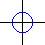. Click a mouse key and a blue ball is added at this place. (The players are also called "philosophers" because they never move. You remember the Monty Python's version of "philosophers' football"?)
Move the mouse cursor over the ball. If there is an adjacent player, a red ring is shown around the ball: 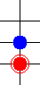
Click to enter the jump mode; then click on the target field.
The ball jumps over an adjacent player and lands directly behind him, the player is removed: 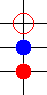 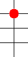
You can move in all 8 directions and also over several players at once: 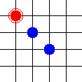
 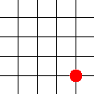
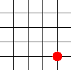
And you can jump several times in one move: 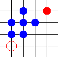 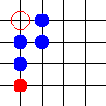 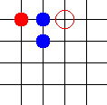 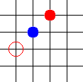 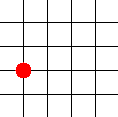
It is not allowed to jump off the board on the left or the right side.